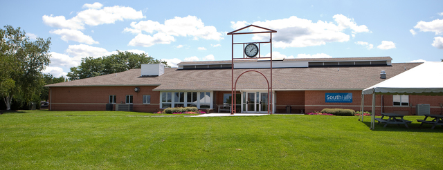

South Hills School of Business & Technology (South Hills) is accredited by the Accrediting Council for Independent Colleges and Schools (ACICS), 750 First Street, NE, Suite 980, Washington, DC 20002-4241, 202-336-6780, to award diplomas, Associate in Specialized Business (ASB) degrees, and Associate in Specialized Technology (AST) degrees.
South Hills is licensed by the Commonwealth of Pennsylvania, State Board of Private Licensed Schools, 333 Market Street, Harrisburg, PA 17126-0333, 717-783-8228.
South Hills has received the following approvals:
South Hills real estate courses (Real Estate Fundamentals and Real Estate Practice) are approved by the Pennsylvania Real Estate Commission for students sitting for the sales exam.
South Hills is authorized by Federal law for enrollment of nonimmigrant alien students.
The Health Information Technology (HIT) specialized associate degree program at our State College and Altoona campuses is accredited by the Commission on Accreditation for Health Informatics and Information Management Education (CAHIIM). Upon successful completion of the HIT program, State College and Altoona graduates are eligible to apply to take the Registered Health Information Technology (RHIT) examination.
The Diagnostic Medical Sonography (DMS) specialized associate degree program (General, Cardiac, and Vascular concentrations) is accredited by the Commission on Accreditation for Allied Health Education Programs (CAAHEP).
The specialized associate degree Medical Assistant programs in State College and Altoona are accredited by the Accrediting Bureau of Health Education Schools (ABHES). Upon successful completion of the Medical Assistant program, State College and Altoona graduates are eligible to apply to take the Certified Medical Assistant (CMA) examination.